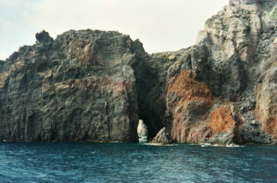

Listen to 'The Gate' in English

XXIII LA PORTE
Nous étions loin du port et ramions en silence.
Des cris nous parvenaient escortés de senteurs
Et les échos hissaient comme aux pointes de lances
Des regrets de jardins, des cloches, des rumeurs.
La colombe vaincue avait fui solitaire.
Le dernier albatros avait crié trois fois
Et, le col droit, filé où se meurt la lumière.
Seul un aigle berçait son ombre sur nos doigts.
Puis l'espace à présent recueillait nos cadences,
Escortait notre envol de son rauque tambour.
Nos coeurs reconnaissaient une étrange espérance.
Nous ramions entre un flot sonore et le ciel sourd.
Alors, s'illuminant de reflets glauques d'onde
Qui dans le jour massif enfonçaient des remous,
Flambant de ses portails, de sa voûte profonde,
Antre, gueule, tombeau, la porte fut sur nous.
Son ombre en nous prenant avait glacé nos lèvres.
Nos rames avaient chu qui sombrèrent d'un bloc.
On eut dit qu'un esprit issu de lourdes fièvres
Enguirlandait d'oubli nos têtes comme un roc.
La nuit et sa clarté baignaient nos somnolences.
Nos yeux désenchantés ouverts aux visions
Percevaient le feu noir rouant un poing de lances,
Ecartelant notre cécité de rayons.
Ce ne fut qu'un instant. Coula sur nos paupières,
- Et pour l'oeil aveuglé ne vibra qu'un seul cri -
Goutte à goutte sur nous perla le froid des pierres
Et le remous brisé dans sa poigne nous prit.
Avons-nous conjuré le supplice et la fête?
Musiques, exilés de vos rites, vos lois,
Nous avons reconnu la cadence parfaite,
Le seuil enseveli que seuls passent les rois.
Sauvage effarouchée et qu'un respect offense,
Une perle de sang m'a ravi mon enfance.
D'avoir franchi la grotte et bravé la défense
Les vogueurs épuisés connurent leur aloi.
Il y a si longtemps que j'ai franchi la porte
Que sept fois renaquit le vaisseau qui m'emporte
Et j'ai pour seul témoin que ce ne fut erreur
Le souvenir qui dort aux paumes du barreur.
J'écoute dans le port les oiseaux qui me content
Mon enfance. Leurs chants d'outre-rêve remontent
Mais je ne comprends plus les mots trop longtemps tus,
Aveugle à la lueur dont ils sont revêtus.
Les mots dont je me sers sont charmes que j'incante.
Ils tressent un rideau fait de feuilles d'acanthe
Et les voix désormais ne me parviennent plus
Qui n'ont vaincu la grotte et franchi le reflux.
Michel Galiana (c) 1991
V THE GATE
We were far from the port and we rowed in silence.
We still heard distant cries, carried by drifting scents,
And echoes lifted, like to the tip of a lance:
Sad memories of yards, bells and sundry events.
The vanquished turtledove had taken lonely flight
The last albatross had given its threefold shout
And fled with upright neck yonder where dies the light
Only an eagle rocked its shadow here about.
Then space itself gathered our rhythmic exertions
And escorted our flight with its hoarse tambourine
Our hearts acknowledged a strange expectation:
Deaf skies, a sounding tide, and rowers in-between.
Then, violently lit by green water’s shimmer
That in massive daylight carved glittering eddies,
Flaming with its portals, with its vaulted glimmer
A den, a maw, a tomb, the gate rose before us.
Its shade took us and put on our lips a cover
Our oars, as one, had slipped and remained weighted down.
One might have said a god, begotten by fever,
Wreathed our heads with forgetfulness, turned them to stone.
Our drowsiness was bathed in night radiances.
Our disenchanted eyes, opened to the vision
Of a black fire spread, a fistful of lances
Rending our blindness with rays and scintillation.
It lasted but a while: Across our eyelids flowed—
The dazzled eye had caused only a cry to surge—
Drop by drop, down our spine, the icy cold of stones,
And the shattered eddy with which we were to merge…
Have we ever conjured both enjoyment and pains?
O music, with your rites and rules we’re at a loss
Since we have experienced perfect rhythmical strains
Past the buried threshold that only kings may cross.
Wild and startled, and by reverence offended,
A little pearl of blood robbed me of my childhood,
Since the cave had been crossed and its ban been challenged
By exhausted rowers whose value was thus proved
It has been so long since I have crossed the gate -
Seven times the vessel that bears me went to sea, -
And I wear as a proof that it was no mistake:
The scar on the palms of the cox I claim to be
I listen in the port to the birds that recount
My childhood. Their songs rise from far beyond my dream:
I no more understand these words unsaid too long,
They may be clothed in light; I don’t perceive their gleam.
The words I make use of now are the spells I cast
They weave a blinding screen made of acanthus leaves,
So that no more voices over to me may pass
That the cave and eddies refuse that I perceive.
Transl. Christian Souchon 01.01.2004 (c) (r) All rights reserved
|
Le traducteur n'a jamais entendu parler de cet événement, considéré par Michel comme marquant son passage à l'âge adulte. Il sait qu'il avait passé des vacances en Sicile avec sa soeur aînée. Sa seconde soeur se souvient que Michel y avait été victime d'un accident dont ni l'un, ni l'autre n'informèrent leurs parents. Il apparaît qu'il s'agissait d'une insolation suivie d'un abondant saignement de nez au cours d'une excursion en bateau à rames jusqu'à une curiosité naturelle, une porte de pierre.
La ligne de la 10ème strophe: |
The translator never heard of this event which Michel considers as marking his passage to grownup age. He knows that Michel was on holiday with his eldest sister in Sicily. Michel's second sister remembers that he met there with an accident that neither of them mentioned to their parents. He appears to have had a touch of sunstroke followed by abundant nosebleed during an oar boat excursion to a curios natural stone gate.
The line in the 10th verse: |
Listen to 'The Gate' in English